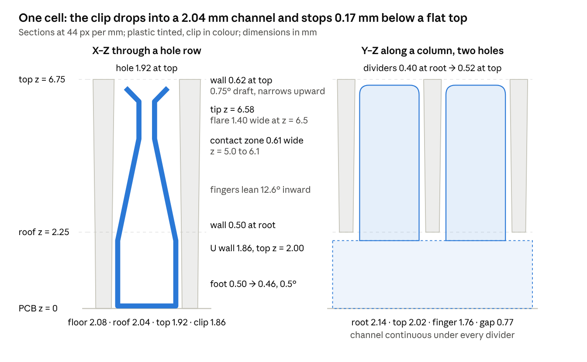

V6 breadboard shell — injection-moulding spec
18 October 2026 · Kevin Cappuccio · live doc on claude.ai
Target geometry for the V6 breadboard shell redesign: a straight-pull, two-plate tool in glass-filled PBT, 480 holes on the 16×30 grid, Spring Clips 6 Holes dropping in from below with no press fit, every wall reaching the top surface, and no rail-end tabs. Derived from the SymTabs and Body95 shell revisions, the clip drawing of 2026-06-08, its STEP, and Fulimei measurement report PR260813 (lot FLM26071618). Coordinates: Z = 0 at the PCB-contact face, +Z toward the top; X along the 30 columns; Y along the 16 rows; origin at board centre.
What changes and what stays
The grid, the clip, the width and the height stay; every wall gets thicker, drafted and reaches the top, the clip channel roof moves up so clips fall in, and the rail-end tabs become body length.
| Item | SymTabs / Body95 today | Spec |
|---|---|---|
| Grid | 16 × 30 holes at 2.54 mm; 12 inner rows + 4 rail rows | unchanged |
| Clip | Spring Clips 6 Holes, two per inner column, five per rail row, from below | unchanged |
| Envelope | 78.76 × 54.61 × 6.75 mm (tabs set the 78.76) | 78.8 × 54.6 × 6.75 mm, uniform outline, no tabs |
| Wall between columns (X) | 0.31 mm, zero draft | 0.50 mm at the root, 0.62 mm at the top, 0.75° draft |
| Wall between holes in a column (Y) | 0.30–0.39 mm | 0.40 mm at the root, 0.52 mm at the top, 0.75° draft |
| Centre divider (y = 0) | 0.19 mm below z = 1.65 (SymTabs) or stops at z = 1.65 (Body95) | same as every other Y divider; channel runs under it |
| Top surface | 0.22 mm ridges 1 mm proud of 5.75 mm divider tops | flat at z = 6.75; all walls reach it |
| Channel roof | z = 1.9–2.0 mm, below the clip's 2.00 mm U-wall top (press fit) | z = 2.25 mm |
| Channel width | 2.04–2.08 mm | 2.04 mm at the roof, 2.08 mm at the floor |
| Rail blocks | solid 5.45 × 7 mm (SymTabs) / cored, 2.15 mm web (Body95) | 1.0 mm walls, 1.5 mm web, trough kept |
| Rail-channel end walls | 0.4 mm, hidden under the tabs | 1.0 mm, body lengthened to cover |
| Rail segment separators (x = ±7.62, ±22.86) | full-height walls | dividers only, channel continuous |
| Draft | none on 62 % of the surface | 0.5–2° everywhere, see Moulding rules |
| Thickest section | 7 mm (SymTabs rails) | 1.5 mm |
| Retention / location | countersunk screw holes in the tabs | two locating pins; retention is an open decision |
Clip envelope the shell must clear
The produced clips (Fulimei PR260813, 5 pieces from lot FLM26071618, 10,000 pcs) are at or under drawing nominal on every dimension that touches the shell; the only growth is in the solder tab, which lives in the PCB. Heights below are from the clip's base underside (= shell Z = 0 when the clip sits on the PCB); the STEP is the source where the drawing has no dimension.
| Clip feature | Drawing | Measured | Value the shell is sized to |
|---|---|---|---|
| U-channel outer width (shell X) | 1.86 | 1.84–1.86 | 1.86 |
| U-wall top above base underside | 2.00 (STEP) | — | 2.00 |
| Finger outer width (X) at z = 2.25, fingers leaning in | 1.77 (STEP, 12.6°) | lean 12.8–13.5°, so narrower | 1.77 |
| Finger outer width (X) in the contact zone, z = 5.0–6.1 | 0.61 | gap 0.30–0.36 | 0.61 |
| Tip flare outer width (X) at z = 6.5 | 1.40 (STEP, R0.9) | R0.87–0.94 | 1.40 |
| Tip height above base underside | 6.58 (STEP) | overall 8.13–8.18 vs 8.06, all of it in the tab (1.74–1.80 vs 1.67) | 6.58, allow +0.05 |
| Finger width (shell Y) | 1.75 | 1.72–1.76 | 1.76 |
| Gap between finger pairs (Y) | 0.79 | 0.77–0.82 | 0.77 |
| Finger pitch | 2.54 | 2.53–2.56 | ±0.10 at the far finger over 5 pitches |
| U-wall length | 15.03 (STEP) | overall 15.33–15.37 vs 15.33 | 15.07 |
| U-wall overhang past the end finger centres | 1.02 notch end, 1.31 tab end (STEP) | — | 1.02 / 1.31 |
| Solder tab | 1.0 × 0.15, hangs 1.48 below the base, centred 1.54 past finger 6 | 1.00–1.03 wide, 1.74–1.80 long | PCB slot only; no shell feature |
| Sheet | 0.15 | 0.13–0.15 | — |
Two clips end to end at the 15.24 mm pitch leave 0.21 mm same-direction and 0.49 mm notch-to-notch; tab-to-tab overlaps by 0.09 mm and is not a permitted orientation. The clip is located in Y by its tab in the PCB slot, so the Y clearance budget at the top of a hole is: PCB slot ±0.05, shell-to-PCB location ±0.05, mould pitch ±0.03, clip pitch up to ±0.10 at the far finger. The 0.13 mm per side the lattice gives at the top covers all but the worst stack-up; the T1 drop-in test is the arbiter, and 0.5° draft on the Y faces is the fallback (gives 0.15 mm).
Hole lattice
Every hole is a through-opening formed by a core tooth rising from the clip-channel blade below, shutting off against the flat cavity plate at the top: holes are widest at the channel roof and narrowest at the top surface, and the hole at its root is never wider than the channel under it (a wider root would trap the tooth). Walls are thinnest at the root and thickest at the top.
| Feature | Spec | Why |
|---|---|---|
| Hole count and pitch | 480 holes, 16 rows × 30 columns, 2.54 mm; cumulative ±0.05 over 76.2 mm (X) and 48.26 mm (Y) | PCB clip slots and LEDs |
| Hole centres | X: ±1.27 + 2.54k, k = 0…14. Y inner: ±1.27, ±3.81, ±6.35, ±8.89, ±11.43, ±13.97. Y rail: ±21.59, ±24.13 | as today |
| Top surface | flat, z = 6.75 ±0.05, every wall reaches it; no ridges, valleys or chamfers | walls reach the top; the finger tips sit 0.17 mm below it |
| Channel roof = hole root | z = 2.25 ±0.05 | 0.25 mm above the clip's 2.00 mm U-wall top |
| Lattice height | 4.50 mm (z = 2.25 → 6.75) | — |
| Hole X at the root | 2.04 | equals the channel width at the roof; finger 1.77 → 0.135 mm per side |
| Hole X at the top | 1.92 | tip flare 1.40 → 0.26 mm per side |
| X wall (between columns) | 0.50 at the root → 0.62 at the top | continuous into the 0.50 mm foot below the roof |
| Hole Y at the root | 2.14 | finger 1.76 → 0.19 mm per side |
| Hole Y at the top | 2.02 | 0.13 mm per side, see the clearance budget |
| Y divider (between holes in a column, centre divider included) | 0.40 at the root → 0.52 at the top | underside flat at z = 2.25 |
| Draft on hole walls | 0.75° per side, narrowing upward; 0.5° minimum; 1.0° allowed on the X faces only | ejection off 480 teeth; Y faces have the tighter finger clearance |
| Root radii | R0.10–0.15 at every wall-to-wall and wall-to-roof junction | EDM leaves them; stress and flow |
| Top edges | sharp or R0.05 max; no countersink | a chamfer thins the 0.5 mm wall; the finger flares guide the wire |
| Hole position to the locating pins | ±0.05 | — |
| Wall thickness tolerance | ±0.03 | — |
Steel view: each column is a comb core of 12 teeth (2.04 × 2.14 mm at the base, 4.5 mm tall) on a 2.04 mm blade; adjacent combs are 0.50 mm apart, teeth within a comb 0.40 mm apart. Rail rows are the same comb turned 90°, 30 teeth long.
Cell cross-sections

Left: across the column through a hole row. Right: along the column through two holes. Every hole is widest at the channel roof and narrowest at the top, so the core teeth pull straight down; the clip's U sits 0.25 mm under the roof, its fingers clear the dividers by 0.13 mm at the top, and its tips sit 0.17 mm under the top face.
Clip channels
A clip must seat in any channel under its own weight with the shell tilted up to 30°, in either permitted orientation, with the PCB not yet fitted. Channels are open to the PCB over their whole length and width (no floor, no end stubs below the roof), which is also what lets the core form them.
| Feature | Spec | Note |
|---|---|---|
| Width at the roof (z = 2.25) | 2.04 +0.04 / −0 | clip 1.86 max → 0.09 mm per side minimum |
| Width at the floor (z = 0) | 2.08 | 0.5° draft per side, widening downward |
| Height, floor to roof | 2.25 ±0.05 | U-wall top 2.00 |
| Foot (wall between neighbouring channels) | 0.50 at the roof → 0.46 at the floor | one wall with the X wall above it |
| Inner columns, clear length | continuous, y = −15.5 to +15.5 at full width and height | a tab-end clip needs 13.97 + 1.31 + 0.2 = 15.48 |
| Centre (y = 0) | no material below z = 2.25; the centre divider is an ordinary Y divider | clip ends reach to within 0.04 mm of centre |
| Rail rows, clear length | continuous, x = −38.4 to +38.4 at full width and height | 36.83 + 1.31 + 0.2 = 38.34 |
| Rail segment boundaries, x = ±7.62 and ±22.86 | Y-type dividers (0.40 → 0.52, bottom at z = 2.25), not walls | five clips sit end to end at 15.24 mm |
| Channel side walls | draw-polished, no texture; R0.1 at the roof | — |
| Channel ends | square, R0.2 max in plan | end wall beyond is 1.0 mm |
Orientation rules that follow from the clip: two clips meeting end to end may be same-direction (0.21 mm gap) or notch-to-notch (0.49 mm); tab-to-tab is not allowed. Five clips in a rail row therefore always put a tab end at one board end, so both ends of every channel are sized for a tab end. The inner columns can use either rule; the PCB slot pattern decides, and both fit this spec.
Rails, frame and envelope
The outline becomes a plain 78.8 × 54.6 mm rectangle: the 0.6 mm rail-end tabs and their countersunk holes go, and the end walls move out to where the tabs ended so the rail channels keep a 1.0 mm end wall instead of today's 0.4 mm.
| Feature | Spec | Note |
|---|---|---|
| Overall | 78.8 × 54.6 × 6.75 mm, ±0.1 | uniform outline, R0.5 vertical corners |
| End walls (short sides, x = ±38.4 to ±39.4) | 1.0 nominal, 1° outside draft | inner face is the rail-channel end |
| Long-side walls (y = ±25.25 outward) | 1.5 nominal; keep the 13° outside taper if it mates with the case, else 1° | inner face = outer rail-row hole wall, 0.75° draft |
| Rail blocks | y = 15.5–20.5 each side; inner wall 15.5–16.5, outer wall 19.5–20.5, both 1.0 mm, 1° draft on the hollow | inner wall may step down to z = 2.25 over the channel ends |
| Rail web | 1.5 mm thick, z = 4.25–5.75; hollow below it open to the PCB | ejector-pin seats on its underside |
| Rail trough (top) | as Body95: 1.0 deep (z = 5.75–6.75), 3.0 wide (y = 16.5–19.5), 2° draft, R0.3 floor corners | ejector witness marks allowed on its floor |
| Rail-row hole walls between rows (y = ±22.86) | Y-divider rule: 0.40 → 0.52, bottom at z = 2.25 | these rows are channels along X |
| Locating pins to the PCB | two, Ø2.0 +0.02 / −0, 1.5 mm tall, 0.5° draft, R0.2 base fillet, on Ø3.0 pads; diagonal rail-block ends, e.g. (+37.5, +18) and (−37.5, −18) | mate to Ø2.05 PCB holes; position ±0.03 to the hole lattice |
| Retention | open decision (see Open decisions) | the tabs' screws are gone |
| Surfaces | top face and trough: A (SPI B-1, no gate or ejector marks); end faces: B (gate vestige ≤0.2 mm proud allowed); underside and hollows: C | — |
Wall thickness across the whole part then runs 0.40 (divider roots) to 1.5 (web and long walls), a 3.75:1 ratio, with nothing thicker than 1.5 mm anywhere.
Moulding rules and material
Straight pull, no side actions, parting line on the top face at z = 6.75. The cavity half is the flat top face with the two rail troughs; everything else (teeth, channel blades, rail hollows, pins, outer walls) is formed by the core half, so the part stays on the core and is ejected upward off the lattice.
| Rule | Value |
|---|---|
| Draft, hole walls | 0.75° (0.5° min; up to 1.0° on X faces) |
| Draft, channel walls | 0.5° |
| Draft, outer walls, rail walls, hollows | 1° |
| Draft, trough sides | 2° |
| Draft, locating pins | 0.5° |
| Minimum wall | 0.40 mm (divider roots); 0.46 mm feet; 0.50 mm X walls; 1.0 mm rail and end walls; 1.5 mm web and long walls |
| Thickness ratio | ≤ 4:1 across the part |
| Internal radii | R0.10–0.15 lattice; R0.2 pins and hollows; R0.3 trough; R0.5 outer corners |
| Undercuts | none; a hole root is never wider than the channel below it |
| Surface finish | top face SPI B-1 (600 grit); all cores draw-polished A-3; no texture anywhere |
| Cosmetic | no gate, ejector or vent witness on the top face; flash in any hole ≤ 0.03 mm |
Material: PBT with 15–20 % glass, UL94 V-0 grade, for example Celanex 3216 or Ultradur B4300 G3. It fills 0.4 mm walls at a 15 mm flow length without heroics, holds the 2.54 mm pitch over 76 mm (0.3 % flow / 1.0 % cross-flow shrink, cut into the tool and corrected at T2), and does not grow with humidity. Unfilled PBT (Celanex 2002, Ultradur B4520) is the fallback if glass shows on the top face. PA66 is not recommended: 0.2 % moisture growth is 0.15 mm over the board length. ABS is not recommended at 0.40 mm walls. Colour: opaque black (≤1 % carbon black) if light must stay inside each hole; natural (translucent white) if the LEDs are meant to glow through the walls; decide before the T1 shot, as it changes shrink slightly.
Tool, process and acceptance
This is a connector-class tool: hardened, EDM'd core inserts carrying 480 teeth, quoted by a header-housing or socket toolmaker, not a quick-turn aluminium shop.
| Item | Spec |
|---|---|
| Tool | single cavity, two-plate, cold runner (hot-runner drops optional later); mould base about 250 × 300 mm; 80–120 t press |
| Core inserts | hardened 1.2083 (S136) or 1.2343, 48–52 HRC; teeth and blades sinker-EDM'd; one insert per column comb or one block, toolmaker's choice; all draw-polished |
| Cavity plate | pre-hardened NAK80 or 718H; flat with the two trough bars; B-1 polish |
| Shut-off | each tooth top kisses the cavity plate at z = 6.75; preload set for zero flash in the holes |
| Gates | 2–4 edge or sub gates into the rail-block end walls on the short sides (x = ±39.4, y = ±18); vestige ≤0.2 mm proud; nothing on the top face |
| Fill path | gate → rail web → lattice both ways; longest path in 0.5 mm wall ≈ 15 mm (L/t ≈ 30); last fill along y = 0 |
| Venting | parting-line vents at every tooth top (0.02 × 1.0 mm, relieved behind), insert joints, and a vent land along the centre dividers |
| Ejection | part stays on the core; Ø1.5–2.0 pins under each rail web (6–8 per rail, witness on the trough floor allowed), Ø1.0 pins or 0.8 × 2.5 mm blades under the end and long walls; none on the lattice; no stripper plate if the drafts above are met, toolmaker to confirm ejection force |
| Cooling | through the insert base; target cycle 25–30 s |
| Steel-safe | T1 cut at the large end of every hole and channel tolerance (walls at minimum); a tight fit is then fixed by removing steel from teeth or blades, never by welding |
| Runner | regrind ≤ 20 % if the moulder uses it |
Acceptance on T1 and T2 samples, 10 shells each, after 24 h at room temperature:
CMM on 20 holes (four corners, centre, and the ends of both rails): position ±0.05 to the locating pins, hole X and Y at the top within ±0.03 of the table.
Pin gauges in every channel: 2.00 go at the roof, 2.08 no-go at the floor.
Drop-in test with 100 clips from lot FLM26071618 across inner columns and rail rows: 100 % seat under their own weight at 30° tilt; no finger touches a divider.
Wire insertion, 0.3 mm and 1.0 mm, in 20 holes with clips seated: no wall damage, no clip lift.
Shell fitted to the PCB with all clips: no lift, twist or rub; tips 0.1–0.25 mm below the top face.
Flatness of the PCB-contact face ≤ 0.15 mm, top face ≤ 0.2 mm; height 6.75 ±0.05.
No short shots at the centre dividers or divider tops; no flash > 0.03 mm in any hole; no sink on the top face.
Open decisions
Retention: the tabs' countersunk screws are gone. Either the case clamps the shell to the PCB, or four M2 bosses go inside the outline at the rail-block ends (Ø3.5 boss, Ø1.6 core hole, 1° draft, R0.2 fillet, pulled from the core).
Colour and opacity: opaque black or natural translucent, set by the LED concept.
Rail trough: keep the 1.0 × 3.0 mm trough, and what sits in it (light pipe, label, nothing).
Long-side 13° outside taper: a case-mating feature to keep, or free to become 1°.
Height: 6.75 mm keeps the case interface and leaves the tips 0.17 mm down; 6.9 mm would give 0.32 mm if the case allows.
Clip orientation at the centre of the inner columns: same-direction or notch-to-notch; the PCB slot pattern decides, both fit.
Locating-pin positions: confirm the two diagonal rail-block ends are free on the PCB.
Sources
SymTabs (1) (1) (2).3mf(Wiiig v6) andBody95.3mf(Wiiig v2~recovered), measured with mesh sections, inward-ray wall thickness and a ray-cast undercut test on 2026-10-18.Spring Clips 6 Holesdrawing, Kevin Cappuccio, 2026-06-08, andSpringClip6.step(bbSimple5Holes (1), 2026-06-10) for the folded envelope.Fulimei measurement report PR260813, 2026-08-13, lot FLM26071618, PO20260617, 10,000 pcs.
Protolabs design guidelines for the quick-turn wall and draft floors this part cannot meet: protolabs.com.